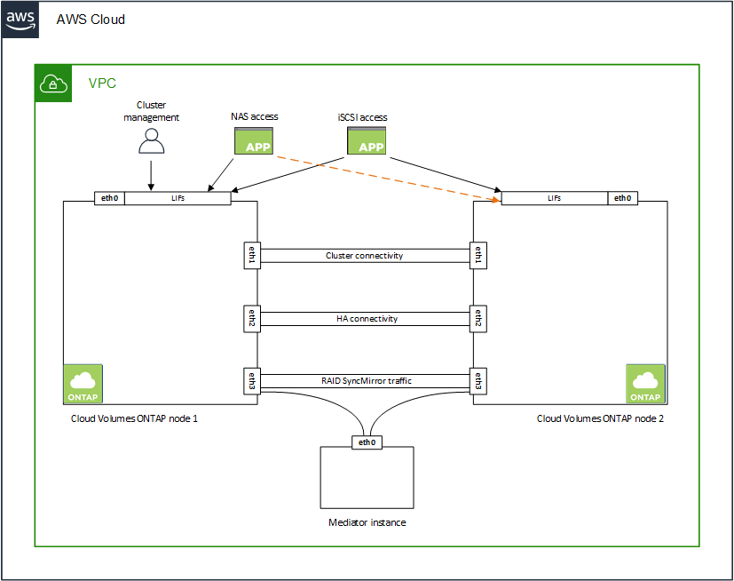

Release notes
Release notes
Networking requirements for Cloud Volumes ONTAP in AWS
 Suggest changes
Suggest changes
BlueXP handles the set up of networking components for Cloud Volumes ONTAP, such as IP addresses, netmasks, and routes. You need to make sure that outbound internet access is available, that enough private IP addresses are available, that the right connections are in place, and more.
General requirements
The following requirements must be met in AWS.
Outbound internet access for Cloud Volumes ONTAP nodes
Cloud Volumes ONTAP nodes require outbound internet access for NetApp AutoSupport, which proactively monitors the health of your system and sends messages to NetApp technical support.
Routing and firewall policies must allow HTTP/HTTPS traffic to the following endpoints so Cloud Volumes ONTAP can send AutoSupport messages:
-
https://support.netapp.com/aods/asupmessage
-
https://support.netapp.com/asupprod/post/1.0/postAsup
If you have a NAT instance, you must define an inbound security group rule that allows HTTPS traffic from the private subnet to the internet.
If an outbound internet connection isn’t available to send AutoSupport messages, BlueXP automatically configures your Cloud Volumes ONTAP systems to use the Connector as a proxy server. The only requirement is to ensure that the Connector’s security group allows inbound connections over port 3128. You’ll need to open this port after you deploy the Connector.
If you defined strict outbound rules for Cloud Volumes ONTAP, then you’ll also need to ensure that the Cloud Volumes ONTAP security group allows outbound connections over port 3128.
After you’ve verified that outbound internet access is available, you can test AutoSupport to ensure that it can send messages. For instructions, refer to ONTAP docs: Set up AutoSupport.
If BlueXP notifies you that AutoSupport messages can’t be sent, troubleshoot your AutoSupport configuration.
Outbound internet access for the HA mediator
The HA mediator instance must have an outbound connection to the AWS EC2 service so it can assist with storage failover. To provide the connection, you can add a public IP address, specify a proxy server, or use a manual option.
The manual option can be a NAT gateway or an interface VPC endpoint from the target subnet to the AWS EC2 service. For details about VPC endpoints, refer to AWS Documentation: Interface VPC Endpoints (AWS PrivateLink).
Private IP addresses
BlueXP automatically allocates the required number of private IP addresses to Cloud Volumes ONTAP. You need to ensure that your networking has enough private IP addresses available.
The number of LIFs that BlueXP allocates for Cloud Volumes ONTAP depends on whether you deploy a single node system or an HA pair. A LIF is an IP address associated with a physical port.
IP addresses for a single node system
BlueXP allocates 6 IP addresses to a single node system.
The following table provides details about the LIFs that are associated with each private IP address.
| LIF | Purpose |
|---|---|
Cluster management |
Administrative management of the entire cluster (HA pair). |
Node management |
Administrative management of a node. |
Intercluster |
Cross-cluster communication, backup, and replication. |
NAS data |
Client access over NAS protocols. |
iSCSI data |
Client access over the iSCSI protocol. Also used by the system for other important networking workflows. This LIF is required and should not be deleted. |
Storage VM management |
A storage VM management LIF is used with management tools like SnapCenter. |
IP addresses for HA pairs
HA pairs require more IP addresses than a single node system does. These IP addresses are spread across different ethernet interfaces, as shown in the following image:

The number of private IP addresses required for an HA pair depends on which deployment model you choose. An HA pair deployed in a single AWS Availability Zone (AZ) requires 15 private IP addresses, while an HA pair deployed in multiple AZs requires 13 private IP addresses.
The following tables provide details about the LIFs that are associated with each private IP address.
LIFs for HA pairs in a single AZ
| LIF | Interface | Node | Purpose |
|---|---|---|---|
Cluster management |
eth0 |
node 1 |
Administrative management of the entire cluster (HA pair). |
Node management |
eth0 |
node 1 and node 2 |
Administrative management of a node. |
Intercluster |
eth0 |
node 1 and node 2 |
Cross-cluster communication, backup, and replication. |
NAS data |
eth0 |
node 1 |
Client access over NAS protocols. |
iSCSI data |
eth0 |
node 1 and node 2 |
Client access over the iSCSI protocol. Also used by the system for other important networking workflows. These LIFs are required and should not be deleted. |
Cluster connectivity |
eth1 |
node 1 and node 2 |
Enables the nodes to communicate with each other and to move data within the cluster. |
HA connectivity |
eth2 |
node 1 and node 2 |
Communication between the two nodes in case of failover. |
RSM iSCSI traffic |
eth3 |
node 1 and node 2 |
RAID SyncMirror iSCSI traffic, as well as communication between the two Cloud Volumes ONTAP nodes and the mediator. |
Mediator |
eth0 |
Mediator |
A communication channel between the nodes and the mediator to assist in storage takeover and giveback processes. |
LIFs for HA pairs in multiple AZs
| LIF | Interface | Node | Purpose |
|---|---|---|---|
Node management |
eth0 |
node 1 and node 2 |
Administrative management of a node. |
Intercluster |
eth0 |
node 1 and node 2 |
Cross-cluster communication, backup, and replication. |
iSCSI data |
eth0 |
node 1 and node 2 |
Client access over the iSCSI protocol. |
Cluster connectivity |
eth1 |
node 1 and node 2 |
Enables the nodes to communicate with each other and to move data within the cluster. |
HA connectivity |
eth2 |
node 1 and node 2 |
Communication between the two nodes in case of failover. |
RSM iSCSI traffic |
eth3 |
node 1 and node 2 |
RAID SyncMirror iSCSI traffic, as well as communication between the two Cloud Volumes ONTAP nodes and the mediator. |
Mediator |
eth0 |
Mediator |
A communication channel between the nodes and the mediator to assist in storage takeover and giveback processes. |

|
When deployed in multiple Availability Zones, several LIFs are associated with floating IP addresses, which don’t count against the AWS private IP limit. |
Security groups
You don’t need to create security groups because BlueXP does that for you. If you need to use your own, refer to Security group rules.
|
|
Looking for information about the Connector? View security group rules for the Connector |
Connection for data tiering
If you want to use EBS as a performance tier and AWS S3 as a capacity tier, you must ensure that Cloud Volumes ONTAP has a connection to S3. The best way to provide that connection is by creating a VPC Endpoint to the S3 service. For instructions, see AWS Documentation: Creating a Gateway Endpoint.
When you create the VPC Endpoint, be sure to select the region, VPC, and route table that corresponds to the Cloud Volumes ONTAP instance. You must also modify the security group to add an outbound HTTPS rule that enables traffic to the S3 endpoint. Otherwise, Cloud Volumes ONTAP cannot connect to the S3 service.
If you experience any issues, see AWS Support Knowledge Center: Why can’t I connect to an S3 bucket using a gateway VPC endpoint?
Connections to ONTAP systems
To replicate data between a Cloud Volumes ONTAP system in AWS and ONTAP systems in other networks, you must have a VPN connection between the AWS VPC and the other network—for example, your corporate network. For instructions, see AWS Documentation: Setting Up an AWS VPN Connection.
DNS and Active Directory for CIFS
If you want to provision CIFS storage, you must set up DNS and Active Directory in AWS or extend your on-premises setup to AWS.
The DNS server must provide name resolution services for the Active Directory environment. You can configure DHCP option sets to use the default EC2 DNS server, which must not be the DNS server used by the Active Directory environment.
For instructions, refer to AWS Documentation: Active Directory Domain Services on the AWS Cloud: Quick Start Reference Deployment.
VPC sharing
Starting with the 9.11.1 release, Cloud Volumes ONTAP HA pairs are supported in AWS with VPC sharing. VPC sharing enables your organization to share subnets with other AWS accounts. To use this configuration, you must set up your AWS environment and then deploy the HA pair using the API.
Requirements for HA pairs in multiple AZs
Additional AWS networking requirements apply to Cloud Volumes ONTAP HA configurations that use multiple Availability Zones (AZs). You should review these requirements before you launch an HA pair because you must enter the networking details in BlueXP when you create the working environment.
To understand how HA pairs work, see High-availability pairs.
- Availability Zones
-
This HA deployment model uses multiple AZs to ensure high availability of your data. You should use a dedicated AZ for each Cloud Volumes ONTAP instance and the mediator instance, which provides a communication channel between the HA pair.
A subnet should be available in each Availability Zone.
- Floating IP addresses for NAS data and cluster/SVM management
-
HA configurations in multiple AZs use floating IP addresses that migrate between nodes if failures occur. They are not natively accessible from outside the VPC, unless you set up an AWS transit gateway.
One floating IP address is for cluster management, one is for NFS/CIFS data on node 1, and one is for NFS/CIFS data on node 2. A fourth floating IP address for SVM management is optional.

A floating IP address is required for the SVM management LIF if you use SnapDrive for Windows or SnapCenter with the HA pair. You need to enter the floating IP addresses in BlueXP when you create a Cloud Volumes ONTAP HA working environment. BlueXP allocates the IP addresses to the HA pair when it launches the system.
The floating IP addresses must be outside of the CIDR blocks for all VPCs in the AWS region in which you deploy the HA configuration. Think of the floating IP addresses as a logical subnet that’s outside of the VPCs in your region.
The following example shows the relationship between floating IP addresses and the VPCs in an AWS region. While the floating IP addresses are outside the CIDR blocks for all VPCs, they’re routable to subnets through route tables.

BlueXP automatically creates static IP addresses for iSCSI access and for NAS access from clients outside the VPC. You don’t need to meet any requirements for these types of IP addresses. - Transit gateway to enable floating IP access from outside the VPC
-
If needed, set up an AWS transit gateway to enable access to an HA pair’s floating IP addresses from outside the VPC where the HA pair resides.
- Route tables
-
After you specify the floating IP addresses in BlueXP, you are then prompted to select the route tables that should include routes to the floating IP addresses. This enables client access to the HA pair.
If you have just one route table for the subnets in your VPC (the main route table), then BlueXP automatically adds the floating IP addresses to that route table. If you have more than one route table, it’s very important to select the correct route tables when launching the HA pair. Otherwise, some clients might not have access to Cloud Volumes ONTAP.
For example, you might have two subnets that are associated with different route tables. If you select route table A, but not route table B, then clients in the subnet associated with route table A can access the HA pair, but clients in the subnet associated with route table B can’t.
For more information about route tables, refer to AWS Documentation: Route Tables.
- Connection to NetApp management tools
-
To use NetApp management tools with HA configurations that are in multiple AZs, you have two connection options:
-
Deploy the NetApp management tools in a different VPC and set up an AWS transit gateway. The gateway enables access to the floating IP address for the cluster management interface from outside the VPC.
-
Deploy the NetApp management tools in the same VPC with a similar routing configuration as NAS clients.
-
Example HA configuration
The following image illustrates the networking components specific to an HA pair in multiple AZs: three Availability Zones, three subnets, floating IP addresses, and a route table.

Requirements for the Connector
If you haven’t created a Connector yet, you should review networking requirements for the Connector as well.